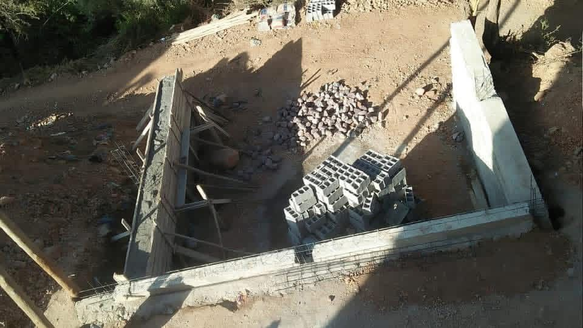
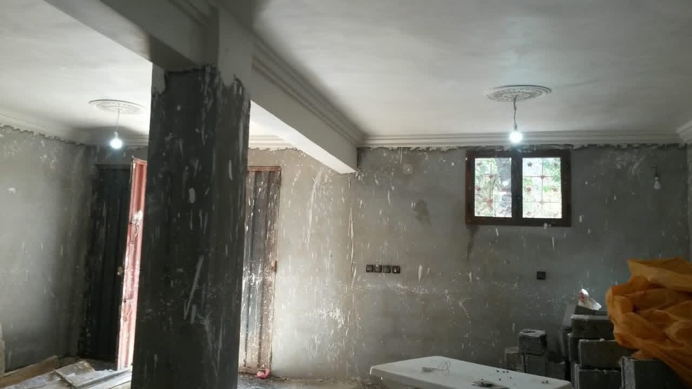
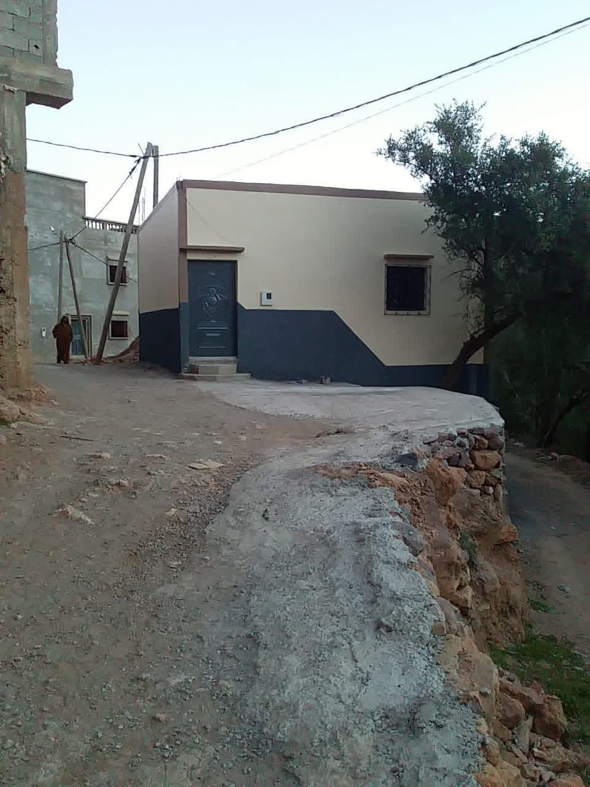

Construction du siège de l’Association Tinlaf au douar
Un local administratif dédié à l’organisation des activités de l’association au cœur du douar.
بعد سلسلة من المشاريع والإنجازات التي همّت تحسين ظروف عيش ساكنة الدوار، رأت الجمعية أنه قد حان الوقت لامتلاك مقر رسمي دائم يُمكّنها من تنظيم عملها بشكل أفضل. فبعد سنوات من الاشتغال داخل مقر مؤقت وبإمكانات محدودة، عملت الجمعية—بفضل تظافر جهود أعضاءها وساكنة الدوار—على تشييد مقر جديد وسط الدوار ليكون مركزًا إداريًا وفضاءً مخصصًا لعقد الاجتماعات وتنظيم الأنشطة.
ويوفّر هذا المقر الجديد مكانًا مناسبًا لتخزين لوازم الجمعية وتجهيزاتها، كما يسهم في تطوير عملها وتسهيل التواصل مع السكان. ويُعد هذا المشروع خطوة مهمة نحو تعزيز حضور الجمعية داخل الدوار وتمكينها من أداء دورها التنموي والاجتماعي بشكل أكثر فعالية وتنظيمًا.
ويوفّر هذا المقر الجديد مكانًا مناسبًا لتخزين لوازم الجمعية وتجهيزاتها، كما يسهم في تطوير عملها وتسهيل التواصل مع السكان. ويُعد هذا المشروع خطوة مهمة نحو تعزيز حضور الجمعية داخل الدوار وتمكينها من أداء دورها التنموي والاجتماعي بشكل أكثر فعالية وتنظيمًا.
Après une série de projets et de réalisations visant à améliorer les conditions de vie des habitants du douar, l’association a estimé qu’il était temps de disposer d’un siège officiel et permanent lui permettant d’organiser son travail de manière plus efficace. Après des années d’activité dans un local provisoire et avec des moyens limités, l’association a œuvré – grâce à la conjugaison des efforts de ses membres et des habitants du douar – à la construction d’un nouveau siège au cœur du douar, afin qu’il soit un centre administratif et un espace dédié à la tenue des réunions et à l’organisation des activités.
Ce nouveau siège offre un lieu approprié pour stocker le matériel et les équipements de l’association, et contribue au développement de son action et à la facilitation de la communication avec la population. Ce projet constitue une étape importante pour renforcer la présence de l’association au sein du douar et lui permettre d’accomplir son rôle de développement et social de manière plus efficace et structurée.
Ce nouveau siège offre un lieu approprié pour stocker le matériel et les équipements de l’association, et contribue au développement de son action et à la facilitation de la communication avec la population. Ce projet constitue une étape importante pour renforcer la présence de l’association au sein du douar et lui permettre d’accomplir son rôle de développement et social de manière plus efficace et structurée.

Travaux de construction du siège au cœur du douar.

Quelque passages des travaux de construction.

Le siège achevé : un espace administratif et associatif au service de la population.